Visual Studio Code 中的 Node.js 教程
Node.js 是一个使用 JavaScript 构建快速且可扩展服务器应用程序的平台。Node.js 是运行时，而 npm 是 Node.js 模块的包管理器。
Visual Studio Code 开箱即用地支持 JavaScript 和 TypeScript 语言，以及 Node.js 调试。但是，要运行 Node.js 应用程序，你需要在你的机器上安装 Node.js 运行时。
要开始本演练，请为你的平台安装 Node.js。Node 包管理器包含在 Node.js 发行版中。你需要打开一个新的终端（命令提示符），以便 node 和 npm 命令行工具被添加到你的 PATH 中。
要测试你的计算机上是否已正确安装 Node.js，请打开一个新终端并输入 node --version，你应该会看到当前安装的 Node.js 版本。
>Linux：有针对各种 Linux 发行版的特定 Node.js 软件包。请参阅通过包管理器安装 Node.js 以查找适合你 Linux 版本的 Node.js 软件包和安装说明。
>Windows Subsystem for Linux：如果你使用的是 Windows，WSL 是进行 Node.js 开发的绝佳方式。你可以在 Windows 上运行 Linux 发行版，并将 Node.js 安装到 Linux 环境中。结合 WSL 扩展，你可以在 WSL 的上下文中运行时获得完整的 VS Code 编辑和调试支持。要了解更多信息，请访问在 WSL 中开发或尝试在 WSL 中工作教程。
Hello World
让我们从创建最简单的 Node.js 应用程序 "Hello World" 开始。
创建一个名为 "hello" 的空文件夹，导航到其中并打开 VS Code：
mkdir hello
cd hello
code .>提示： 你可以直接从命令行打开文件或文件夹。句点 '.' 表示当前文件夹，因此 VS Code 将启动并打开 Hello 文件夹。
在文件资源管理器工具栏中，按新建文件按钮：
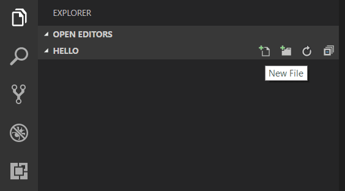
并将文件命名为 app.js：
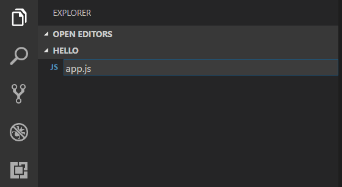
通过使用 .js 文件扩展名，VS Code 将此文件解释为 JavaScript，并将使用 JavaScript 语言服务来评估其内容。请参阅 VS Code JavaScript 语言主题以了解有关 JavaScript 支持的更多信息。
在 app.js 中创建一个简单的字符串变量，并将该字符串的内容发送到控制台：
var msg = 'Hello World';
console.log(msg);请注意，当你输入 console. 时，IntelliSense 会自动呈现 console 对象的相关信息。
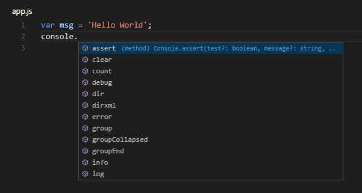
还要注意，VS Code 知道 msg 是一个字符串，这是基于其初始化为 'Hello World' 推断出来的。如果你输入 msg.，你将看到 IntelliSense 显示 msg 上所有可用的字符串函数。
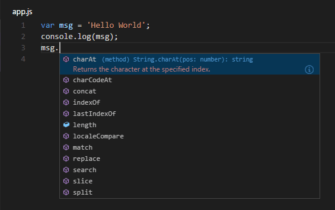
在体验完 IntelliSense 之后，将上述源代码示例中的任何额外更改还原并保存文件（kb(workbench.action.files.save)）。
运行 Hello World
用 Node.js 运行 app.js 非常简单。在终端中，只需输入：
node app.js你应该会看到 "Hello World" 输出到终端，然后 Node.js 返回。
集成终端
VS Code 有一个集成终端，你可以使用它来运行 shell 命令。你可以直接从那里运行 Node.js，避免在运行命令行工具时切换出 VS Code。
视图 > 终端（带有反引号字符的 kb(workbench.action.terminal.toggleTerminal)）将打开集成终端，你可以在那里运行 node app.js：
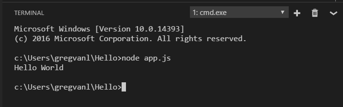
在本演练中，你可以使用外部终端或 VS Code 集成终端来运行命令行工具。
调试 Hello World
正如简介中提到的，VS Code 自带了一个用于 Node.js 应用程序的调试器。让我们尝试调试我们简单的 Hello World 应用程序。
要在 app.js 中设置断点，请将编辑器光标放在第一行，然后按 kb(editor.debug.action.toggleBreakpoint) 或点击行号旁边的编辑器左侧装订线区域。装订线中将出现一个红色圆圈。
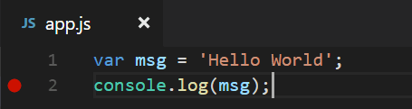
要开始调试，请选择活动栏中的运行和调试视图：
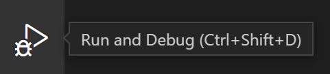
现在你可以点击调试工具栏的绿色箭头或按 kb(workbench.action.debug.start) 来启动并调试 "Hello World"。你的断点将被命中，你可以查看并逐步执行这个简单的应用程序。请注意，VS Code 会显示不同颜色的状态栏，以指示它处于调试模式，并且会显示调试控制台。
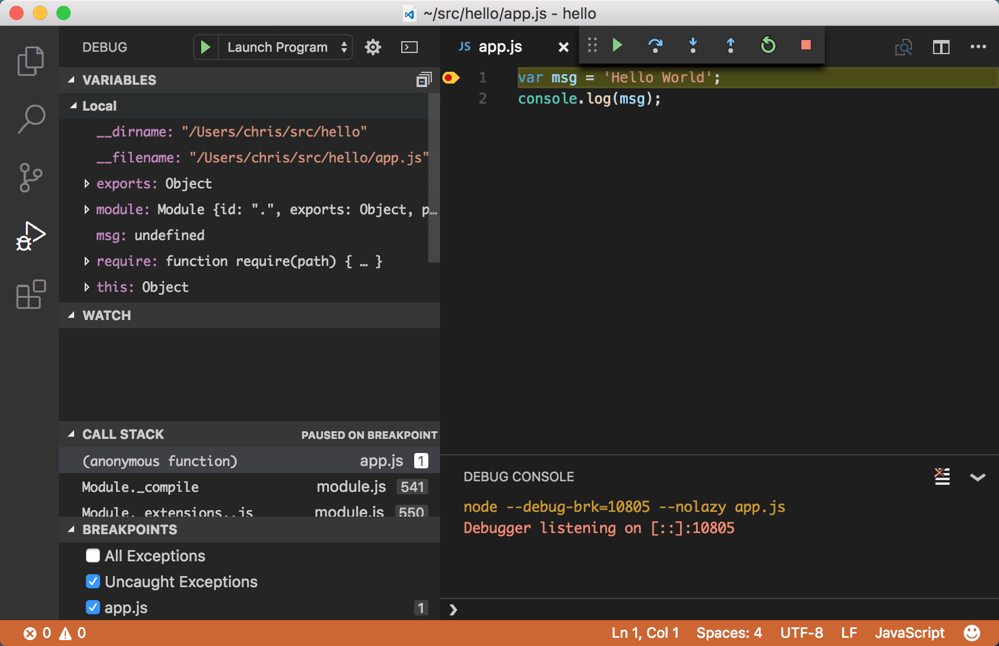
现在你已经看到了 VS Code 在 "Hello World" 中的实际表现，下一节将展示如何使用 VS Code 开发全栈 Node.js Web 应用。
>注意： 我们已经完成了 "Hello World" 示例，因此在创建 Express 应用之前，请先导航出该文件夹。如果你愿意，可以删除 "Hello" 文件夹，因为本演练的其余部分不需要它。
Express 应用程序
Express 是一个非常流行的用于构建和运行 Node.js 应用程序的应用程序框架。你可以使用 Express Generator 工具来脚手架（创建）一个新的 Express 应用程序。Express Generator 作为 npm 模块发布，并使用 npm 命令行工具 npm 进行安装。
>提示： 要测试你的计算机上是否已正确安装 npm，请在终端中输入 npm --help，你应该会看到使用文档。
在终端中运行以下命令来安装 Express Generator：
npm install -g express-generator-g 开关会在你的机器上全局安装 Express Generator，这样你就可以从任何位置运行它。
现在我们可以通过运行以下命令来脚手架一个名为 myExpressApp 的新 Express 应用程序：
express myExpressApp --view pug这将创建一个名为 myExpressApp 的新文件夹，其中包含你的应用程序的内容。--view pug 参数告诉生成器使用 pug 模板引擎。
要安装应用程序的所有依赖项（同样作为 npm 模块发布），请进入新文件夹并执行 npm install：
cd myExpressApp
npm install此时，我们应该测试我们的应用程序是否能够运行。生成的 Express 应用程序有一个 package.json 文件，其中包含一个 start 脚本，用于运行 node ./bin/www。这将启动正在运行的 Node.js 应用程序。
在 Express 应用程序文件夹的终端中，运行：
npm startNode.js Web 服务器将启动，你可以浏览到 http://localhost:3000 来查看正在运行的应用程序。
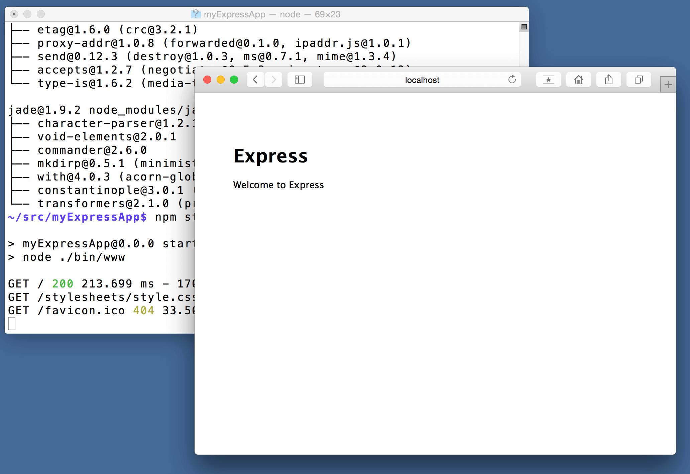
出色的代码编辑
关闭浏览器，在 myExpressApp 文件夹的终端中，按 kbstyle(CTRL+C) 停止 Node.js 服务器。
现在启动 VS Code：
code .>注意： 如果你一直使用 VS Code 集成终端来安装 Express Generator 和脚手架应用，你可以通过文件 > 打开文件夹命令从正在运行的 VS Code 实例中打开 myExpressApp 文件夹。
Node.js 和 Express 文档很好地解释了如何使用该平台和框架构建丰富的应用程序。Visual Studio Code 将通过提供出色的代码编辑和导航体验，使你在开发这些类型的应用程序时更加高效。
打开 app.js 文件，将鼠标悬停在 Node.js 全局对象 __dirname 上。注意 VS Code 是如何理解 __dirname 是一个字符串的。更有趣的是，你可以获得针对 Node.js 框架的完整 IntelliSense。例如，你可以 require http 模块，并在 Visual Studio Code 中输入时获得针对 http 类的完整 IntelliSense。
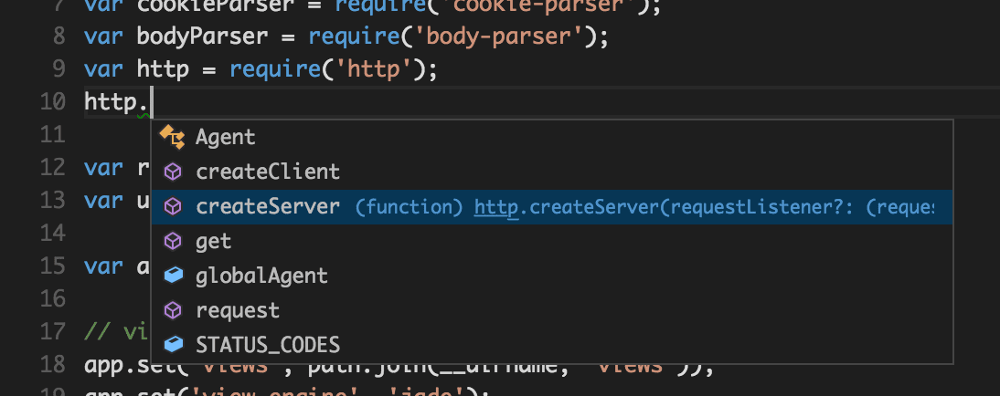
VS Code 使用 TypeScript 类型声明（typings）文件（例如 node.d.ts）来向 VS Code 提供有关你在应用程序中使用的基于 JavaScript 的框架的元数据。类型声明文件是用 TypeScript 编写的，因此它们可以表达参数和函数的数据类型，使 VS Code 能够提供丰富的 IntelliSense 体验。得益于一项名为 自动类型获取 的功能，你不必担心下载这些类型声明文件，VS Code 会为你自动安装它们。
你还可以编写引用其他文件中模块的代码。例如，在 app.js 中我们 require 了 ./routes/index 模块，该模块导出了一个 Express.Router 类。如果你在 index 上调出 IntelliSense，你可以看到 Router 类的形状。
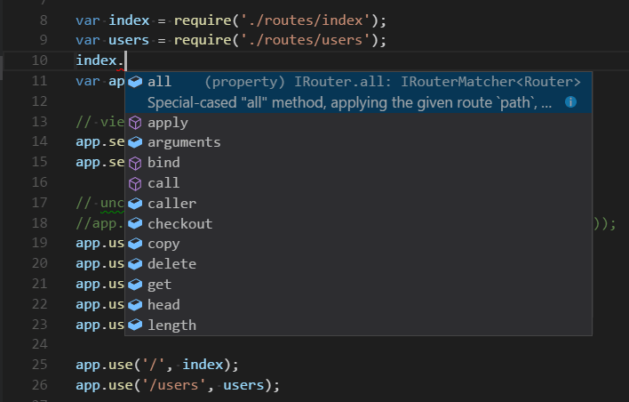
调试你的 Express 应用
你需要为你的 Express 应用程序创建一个调试器配置文件 launch.json。点击活动栏中的运行和调试（kb(workbench.view.debug)），然后选择创建 launch.json 文件链接以创建默认的 launch.json 文件。通过确保 configurations 中的 type 属性设置为 "node" 来选择 Node.js 环境。当文件首次创建时，VS Code 将在 package.json 中查找 start 脚本，并将该值用作启动程序配置的 program（在本例中为 "${workspaceFolder}\\bin\\www）。
{
"version": "0.2.0",
"configurations": [
{
"type": "node",
"request": "launch",
"name": "Launch Program",
"program": "${workspaceFolder}\\bin\\www"
}
]
}保存新文件，并确保在运行和调试视图顶部的配置下拉菜单中选择了启动程序。打开 app.js，在文件顶部附近创建 Express 应用对象的位置，通过点击行号左侧的装订线来设置一个断点。按 kb(workbench.action.debug.start) 开始调试应用程序。VS Code 将在新终端中启动服务器，并命中我们设置的断点。从那里你可以检查变量、创建监视以及逐步执行代码。
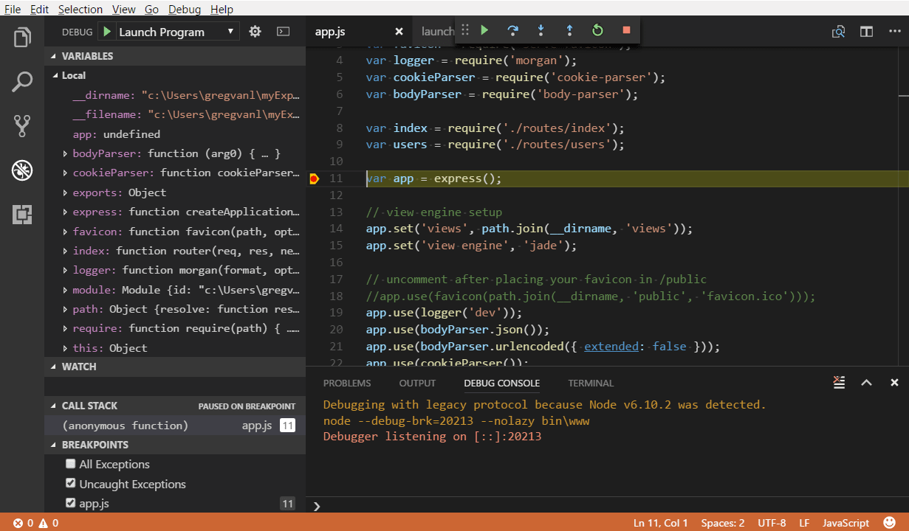
部署你的应用程序
如果你想学习如何部署你的 Web 应用程序，请查看将应用程序部署到 Azure 教程，我们在其中展示了如何在 Azure 中运行你的网站。
后续步骤
Visual Studio Code 还有更多内容值得探索，请尝试以下主题：
- Node.js 配置文件模板 - 使用一组精心策划的扩展、设置和代码片段创建一个新的配置文件。
- 设置 - 了解如何按你喜欢的工作方式自定义 VS Code。
- 调试 - 这是 VS Code 真正大放异彩的地方。
- 视频：VS Code 调试入门 - 了解如何在 VS Code 中使用调试功能。
- Node.js 调试 - 了解更多关于 VS Code 内置 Node.js 调试的信息。
- 调试配方 - 客户端和容器调试等场景的示例。
- 任务 - 使用 Gulp、Grunt 和 Jake 运行任务，显示错误和警告。